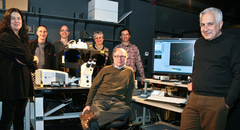

News Archives : 2012 : Taking Microscopy to the Limit -- and Beyond
by Richard Saltus
February 15, 2012

(L to R) Susan Mango, Andy McMahon, Bodo Stern, Catherine Dulac,
Sam Kunes (seated), Alex Schier, and Jeff Lichtman
Even with the most powerful optical microscopes, biologists who study living cells and the tiny structures within them have been unable to discern objects below a certain size – the “Abbe limit” proposed in the 19th Century. But in the past few years, the advent of new “superresolution” microscopes has bent, if not broken, that barrier, giving scientists breathtaking views of living cells in unprecedented detail.
“It’s quite a revolution,” says MCB professor Sam Kunes, principal investigator on a $1 million grant that allowed the department to acquire a Zeiss ELYRA superresolution microscope, now up and running in the Harvard Center for Biological Imaging. The award was announced last September and the microscope was delivered about two months ago, said Kunes. It has been in operation since mid-November. “It was obvious to a number of people that it’s a technology many institutions are going to have, and we needed to help make it available to more people here,” said Kunes, Professor of Molecular and Cellular Biology. Users throughout the Harvard community have access to the device, he said. Joining forces to secure the grant were Kunes; MCB Department Chair Catherine Dulac; Bodo Stern, Director of Research Affairs in the FAS Center for Systems Biology; and Professors Jeff Lichtman, Alex Schier, Susan Mango and Andy McMahon.
“Many structures we would love to see are beyond the limit of resolution of a traditional microscope. This new microscope will allow us to peer into the nucleus and see details that appeared as fuzzy blobs previously,” said Mango. “We’re tremendously excited at the new opportunities.” Several of the researchers will take advantage of the superresolution instrument to learn in greater detail how the brain and nervous system develop in different organisms, tracing the fine wiring and connections and proteins that orchestrate aspects of behavior.
“The problem that has slowed down research in many fields of biology, including neurobiology, is the inability to map molecules to particular structures with very high resolution,” Kunes explained. Although electron microscopes can resolve extremely small objects, he said, “The tools for locating specific molecules in electron micrographs are not very robust.” Nor is electron microscopy well suited for imaging living samples.
To advance their studies of development and other biological processes, scientists often are interested in the location and movement of cell components smaller than 1 micron. But in 1873, physicist Ernst Abbe found that, due to the diffraction of light, optical microscopes could resolve objects no smaller than about half the wavelength of the light illuminating them. That is about 250 nanometers [billionths of a meter], larger than many of the structures biologists need to image for today’s research.
“Light microscopy at very high resolution allows you to see if a protein is in a particular structure, like a synapse – you tag it with an antibody or a fluorescent tag,” said Kunes. “We’ve always been able to do that, but now we can do it at a higher resolution than was thought possible.”
Using several different technological approaches, the new superresolution microscopes can resolve spatial distances as small as 20 nanometers. The Zeiss ELYRA microscope has three imaging modalities: laser scanning confocal microscopy, Photo Activated Localization Microscopy (PALM), and Structured Illumination Microscopy (SIM). The technologies are used in combination with multi-color fluorescent molecular probes that latch on to the molecules of interest so they can be observed.
The new microscope is ideally suited for investigating developmental processes, said Kunes, since they are governed and fine-tuned by spatial cues, many of which act in the range now open to detailed imaging.
The Kunes, Lichtman, and Dulac groups are investigating the development of ultrastructure of nerve synapses – Kunes in the fruit fly brain, Lichtman in his “Brainbow” mice that light up axonal circuitry in fluorescent colors, and Dulac in the sensory neuron axon terminals of the vomeronasal organ in mice.
Two groups, led by Andrew McMahon and Alex Schier, are visualizing morphogen movement at high resolution. McMahon focuses on Sonic Hedgehog as it patterns the ventral neural tube during CNS development, while Schier plans to image the morphogen Squint and its co-localization with other components of the Nodal signaling pathway during Zebrafish development. “We are very excited about the ability to watch our favorite molecules at unprecedented resolution,” Schier commented.
Mango’s group will use the Zeiss microscope in exploring how the packaging of chromatin is modulated during development, in order to understand the transition from developmental plasticity to cell fate commitment. The new microscope, located in the Harvard Center for Biological Imaging on the second floor of the Biological Laboratories building at 16 Divinity Ave., is open to all Harvard researchers who’ve completed training in its operation.
[February 15, 2012]